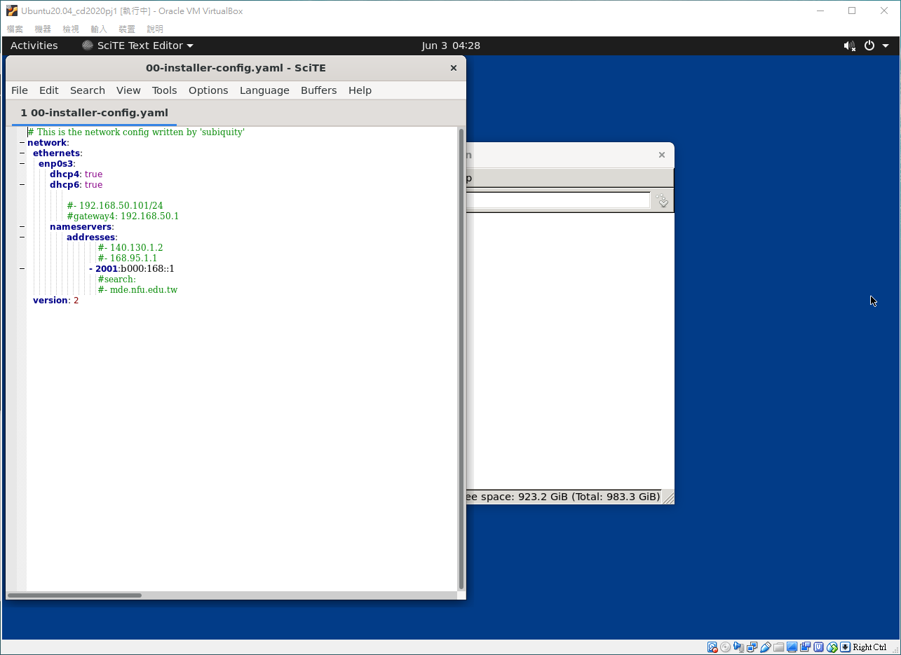
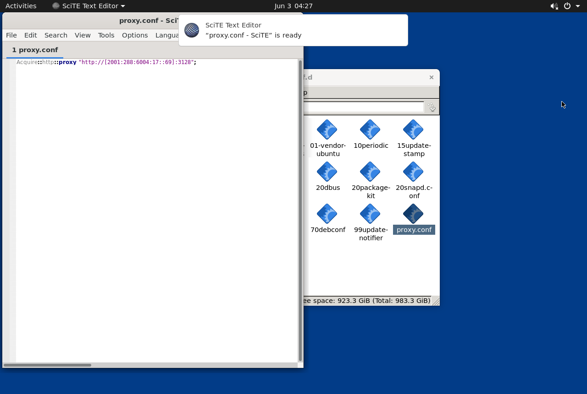
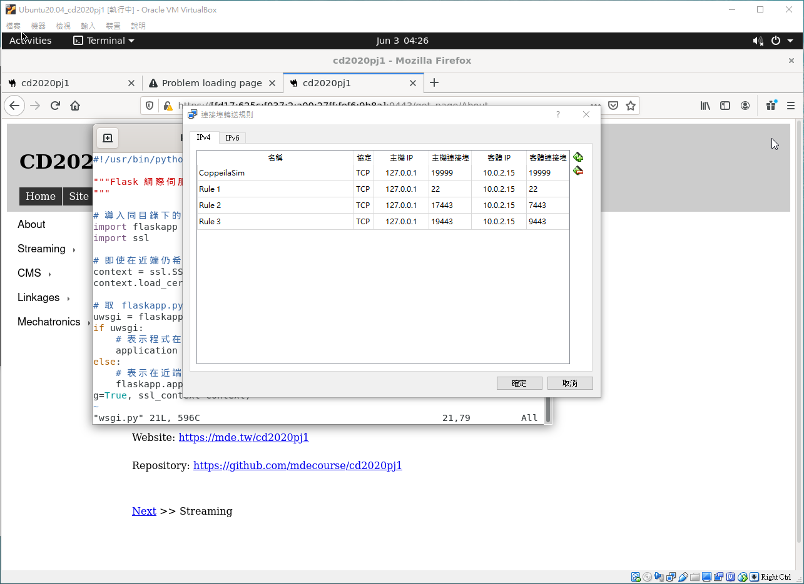
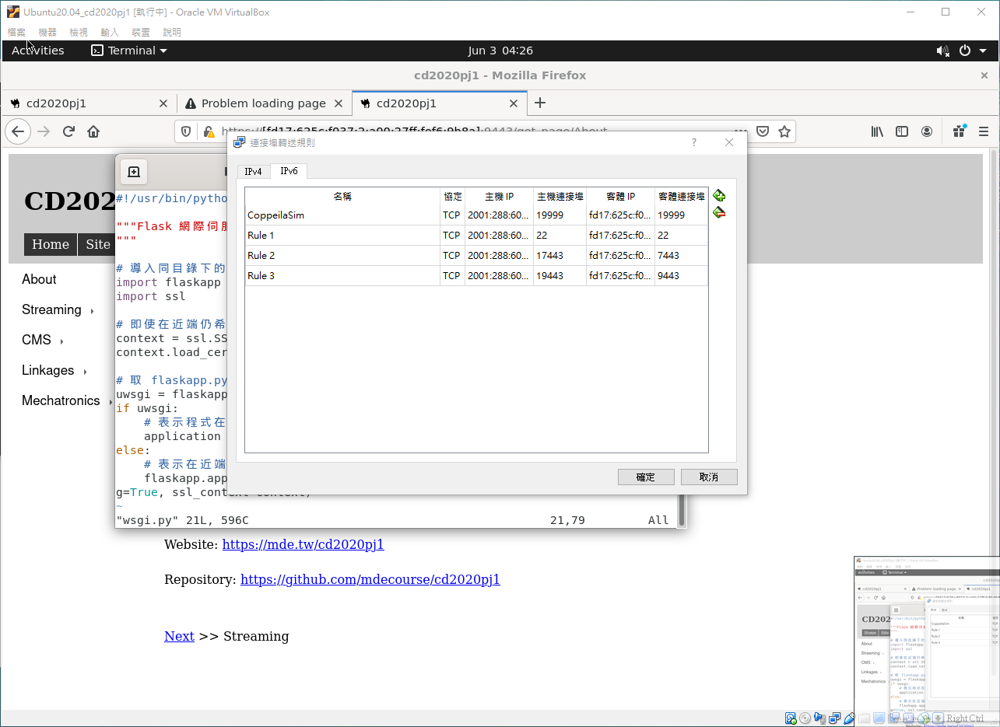
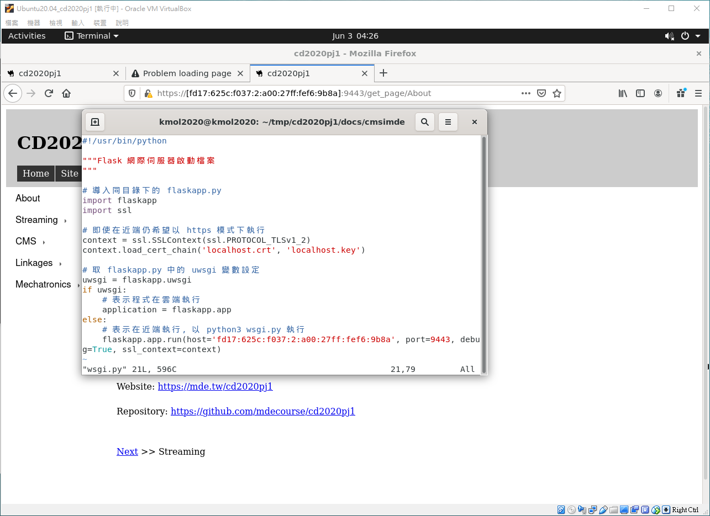
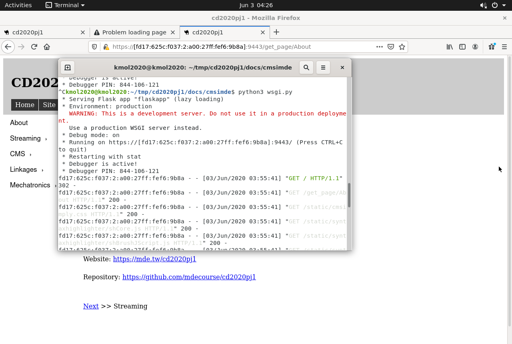
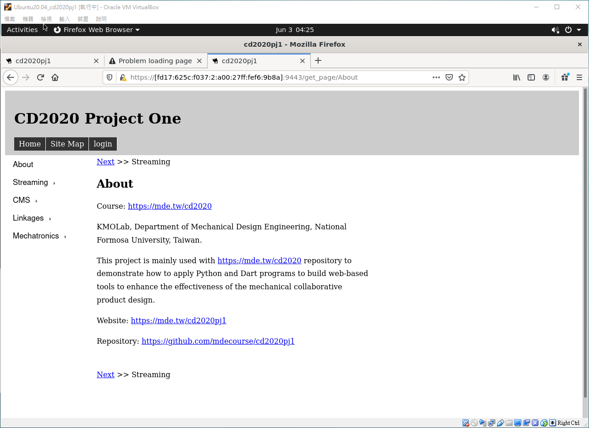
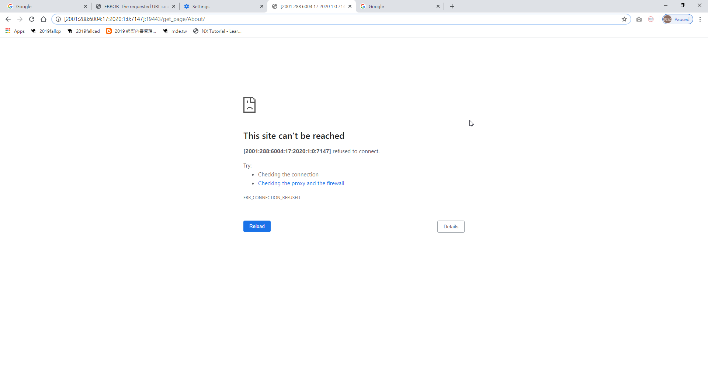

Google + Domain API <<
Previous Next >> 問題解決
Ubuntu 20.04 Virtualbox
在Virtualbox中的網路設定以及Port號設定
1.設定網路連線
至/etc/netplan目錄下新建00-installer-config.yaml檔案
cd /etc/netplan
sudo vi 00-installer-config.yaml
當中內容如下:

將對應為IPv6下的狀態
sudo netplan apply
完成後需進行更新
至/etc/apt/apt.conf.d 目錄下新增proxy.conf設定檔案
cd /etc/apt/apt.conf.d
sudo vi proxy.conf
當中內容如下:

需對應電腦所連結之proxy號
sudo apt update
更新apt的內容
2.Virtualbox中的Port號設定
IPv4下的Port號設定

19999為CoppeliaSim對應的RemoteAPI
22為對外Putty的設定
7443、9443 為網站對應port號
IPv6下的Port號設定

注意客端IP位置需對應在ifconfig中查詢到的號碼對應
ifconfig的運用可參考對應連結中的week13
3.開啟虛擬主機中的cd2020pj1對應網站
進入目錄/tmp/cd2020pj1/docs/cmsimde中的wsgi.py檔案
cd tmp/cd2020pj1/docs/cmsimde
vi wsgi.py
更改其內容的host號碼

完成後可輸入
python3 wsgi.py
來啟動對應的網站

取到對應連結後進入虛擬主機的Firefox開啟連結完成內部連線

外部開啟連結為
https://[2001:288:6004:17:2020:1::7147]:19443
為當初之設定port號有所對應

不過無法連接需要再加以研究
Google + Domain API <<
Previous Next >> 問題解決